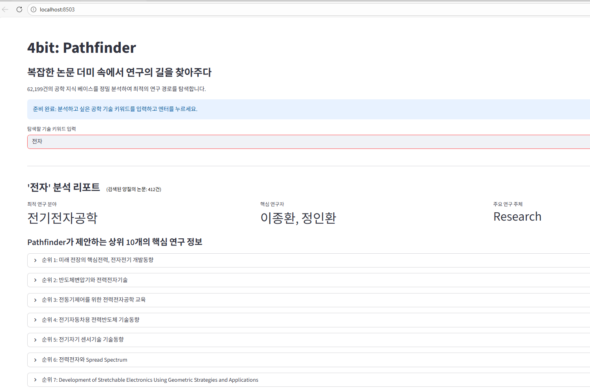

62,199건의 공학 분야 논문 메타데이터를 다뤘는데, 트렌드 분석에 가장 중요한 키워드(KYWD) 필드가 26.38%나 비어 있었습니다.
이 상태로는 정확한 연구 동향 분석이 불가능했고, 설령 키워드가 있어도 사용자가 입력한 검색어와 논문 제목의 단어가 정확히 일치하지 않으면 관련 논문을 못 찾는 문제도 있었습니다.
데이터 전처리부터 모델링 및 최적화까지 이 파트를 맡았습니다.
결측치를 그냥 버리지 않고, 논문 제목에서 단어를 추출해 채우는 방식을 택했습니다. 긴 단어부터 우선 매칭되도록 정렬한 master_vocab 사전을 만들고, 동의어를 하나로 묶는 매핑과 140여 개 불용어 사전으로 노이즈를 걸러 제목에서 키워드를 역추출했습니다.
논문 제목을 ko-sroberta-multitask로 임베딩하고 FAISS 인덱스에 넣어, 62,199건 전체를 실시간으로 유사도 검색할 수 있게 만들었습니다.
Streamlit으로 “4bit Pathfinder”라는 대화형 웹 UI를 만들어, 키워드를 입력하면 관련 연구 분야·핵심 연구자·주요 기관을 바로 보여주도록 구성했습니다.
키워드 결측치 26.38%를 제목 기반 역추출로 복구했더니 77.39%가 복구되어 최종 데이터 충전율 94.0%를 달성했습니다.
검색 결과에는 “소개”, “안내”, “공지” 같은 연구와 무관한 행정성 노이즈가 섞여 들어오는 문제도 있었는데, 이런 단어가 포함된 항목을 걸러내는 필터링 로직을 추가해서 순수 연구물 위주로 결과가 나오도록 정리했습니다.
결과적으로 데이터톤에서 우수상을 받았습니다.